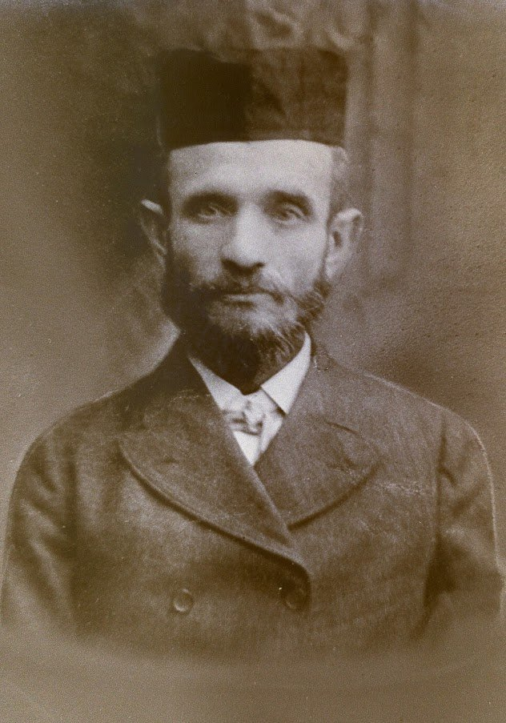
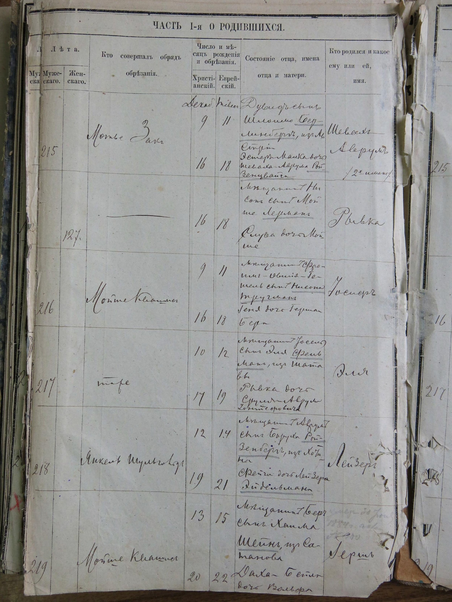
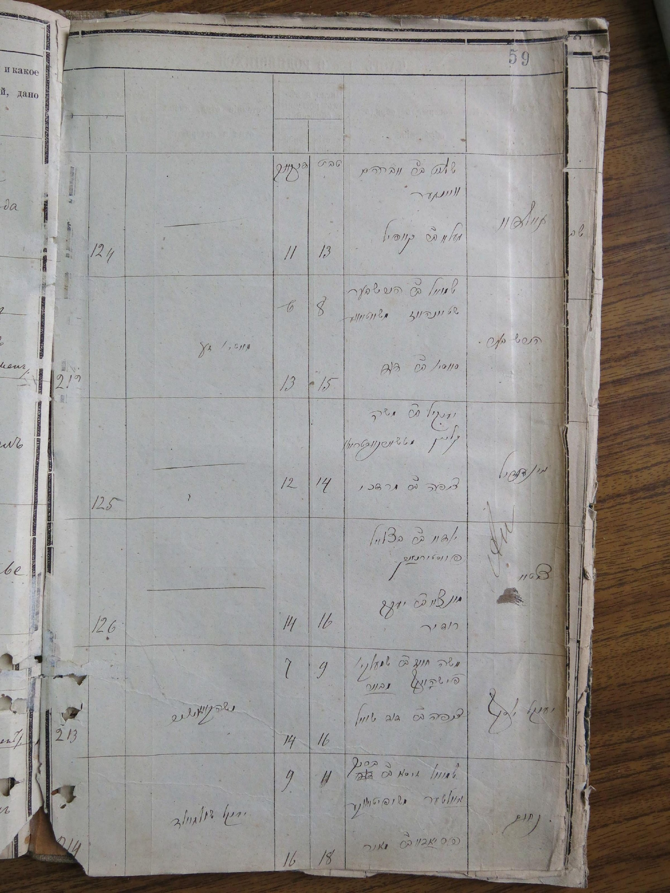

David Goldsmith

Photo: Minnie-Laura Steinberg (Goldsmith) collection
Quick Facts
| Born | ~1858, Kosów or vicinity, Kingdom of Galicia (Austro-Hungarian Empire); see Birth Year and Birthplace sections |
| Died | October 13, 1941, Brooklyn, New York 1 |
| Buried | United Hebrew Cemetery, Staten Island, New York |
| Parents | Father: Avraham-Shlomo Goldschmidt/Berliner (name uncertain; see below); Mother: Pearl (Cooperman/Kipperman) |
| First wife | Esther Malka Rosenzweig (died before ~1896, location unknown) |
| Second wife | Lena "Libby" Mund (~1870–1935), from Jezierzany, Galicia |
| Children | Abraham (by Esther, born 1882, Russia); Louis, Paul/"Benny," Frances, Lee (by Lena) |
| Occupation | Goldsmith / jeweler |
| Immigration | Arrived Philadelphia, July 27, 1895 (probable; see Immigration section) |
| Citizenship | Never naturalised; likely died an alien 2 |
| Surnames | Goldschmidt (European); Berliner (Hebrew/religious); Goldsmith (American anglicisation) |
Jewish Surnames in Eastern Europe: Historical Background
To understand why David Goldsmith appears under three different surnames in the historical record, it helps to understand how Jewish surnames came to exist at all, because for most of the previous two millennia, they didn't.
The Patronymic Tradition
Ashkenazi Jews traditionally identified themselves through a patronymic system: a person was known by their given Hebrew name followed by ben (son of) or bat (daughter of) and their father's Hebrew name. A man named Shmuel whose father was Avraham was simply Shmuel ben Avraham; his son, if named Moshe, would be Moshe ben Shmuel. Surnames in the hereditary European sense did not exist.20 This system had deep roots in Jewish law and liturgy: it remains the form used in religious documents, including Torah aliyot, marriage contracts (ketubbot), divorce documents (gittin), and Hebrew inscriptions on tombstones to this day.
In addition to the patronymic, Jews in Yiddish-speaking communities often went by a separate everyday vernacular name (a kinnui), which might be a Yiddish or German-language equivalent of their Hebrew name, or an entirely different nickname used in daily speech. A man known in synagogue as Avraham might be called Avreml or Aberl at home, and Adalbert at the tax office. This layering of names (Hebrew religious name, Yiddish vernacular name, and civil name) meant that a single individual might plausibly appear under several different names in different types of records, and that matching individuals across document types requires careful reasoning rather than simple name-matching.21
The Legislation: Why Hereditary Surnames Were Imposed
The imposition of hereditary surnames on European Jews was a product of Enlightenment-era administrative reform, a project by European states to register, tax, and in some cases emancipate their Jewish populations more efficiently. The timing and character of the laws varied by country:
- Habsburg Empire (Galicia): Emperor Joseph II's Edict of Toleration (1782) began a broad program of Jewish integration into civic life. A subsequent imperial decree in 1787, Das Patent über die Judennamen, required Jews throughout the Habsburg lands, including the Kingdom of Galicia and Lodomeria from which David's family originated, to adopt fixed, hereditary German-language surnames by January 1, 1788. Jews were free to propose their own surname subject to official approval; those who did not were assigned one.22
- Prussia: Prussia began requiring surnames sequentially in its eastern provinces during the 1790s, with all Prussian Jews having adopted surnames by 1845. The 1812 Emancipation Edict linked civic equality explicitly to adoption of fixed German surnames.
- Russia / Pale of Settlement: Russian surname legislation was piecemeal and unevenly enforced. Czar Alexander I's 1804 "Statute Concerning the Jews" required that "every Jew shall have or accept a known inherited family name" for purposes of citizenship, property rights, and legal proceedings. A 1835 decree under Nicholas I reinforced the requirement, and an 1850 law prohibited further surname changes.23
How Surnames Were Chosen and Assigned
The new surnames fell into recognisable categories. Occupational surnames reflected the trade or craft of the family: Goldschmidt (goldsmith), Schneider (tailor), Fleischer (butcher), Kaufmann (merchant). Geographic surnames referenced a town, region, or place of origin: Berliner, Posner (from Poznan), Warschauer (from Warsaw), Wiener (from Vienna). Descriptive or nature-based names were also common: Rosenthal (rose valley), Goldberg (gold mountain), Schwartz (black), Klein (small). Names derived from religious lineage continued as well, such as Cohen, Levi, and Katz (an acronym of Kohen Tzedek, righteous priest).24
A popular story holds that Habsburg officials charged bribes for better-sounding surnames, leaving those who could not pay with insulting or arbitrary names. This account has been specifically examined and rejected by Alexander Beider, the leading scholarly authority on Ashkenazic surnames. Analysing approximately 37,000 surviving Galician surnames, Beider found that genuinely derogatory surnames are vanishingly rare (the opposite of what systematic corruption would produce), and that no documentary evidence of such bribery lists has ever been found. His conclusion is that the Habsburg surname project was primarily an administrative Germanisation policy, not a corruption scheme, and that the popular story is a folk memory without a documentary basis.25
Religious Names Alongside Civil Names
Even after hereditary civil surnames were legally required, many Jews continued to use separate names in religious and community contexts. The Hebrew or Yiddish religious name, the shem hakodesh ("holy name"), remained in use for synagogue purposes, religious documents, and tombstone inscriptions, while the civil name appeared in government records, census rolls, and business documents. These two parallel naming streams could use entirely different surnames as well as different given names, which is why a single individual might appear under one surname in a civil record and a completely different surname in a rabbinical record, sometimes in the same document.26 As will be seen below, this is precisely what the 1882 Kamianets birth register shows for David.
Surnames: Goldschmidt, Berliner, and Goldsmith
David is documented under three different surnames depending on the context and country of the record. Understanding this is essential to evaluating every other piece of evidence about him.
Goldschmidt was his European occupational surname, derived from the German word for goldsmith (Goldschmied). It appears on his wife Lena's 1898 ship manifest,3 and on the Russian-language side of an 1882 birth register entry from Kamianets-Podilskyi.4
Berliner was his Hebrew/religious surname, likely denoting geographic origin. It appears on the Hebrew-language side of the same 1882 birth register entry, for the same person, the same event. The use of two simultaneous surnames, one occupational and one geographic, was common among Ashkenazi Jewish families in the Austro-Hungarian Empire in the nineteenth century.5
The 1882 entry is the single most important document in this research. It is the birth registration of David's son Abraham (Shevakh-Avrum), born December 9, 1882, in Kamianets-Podilskyi. David appears in it as the father. This is how his two surnames, his Galician origin, and his father's name are all recorded. The entry follows the standard rabbinical register format: the father is identified as "[given name] son of [grandfather's name] [family surname]"; so "David son of Shlomo Goldschmidt" means David, whose own father was named Shlomo.
{kind=link}

Russian side{kind=link}

Hebrew side| Archive | DAKhmO (Khmelnytskyi Oblast State Archive), Fond 277, Opys 1, Sprava 20 |
| Entry | 215, December 9, 1882 (Julian calendar) |
| Child | Шевахъ-Аврумъ (Shevakh-Avrum), male |
| Father: Russian side | Дувидъ сынъ Шломо ГОЛЬДШМІДТЪ = David, son of Shlomo, surname Goldschmidt (Shlomo is David's father, not David's own name) |
| Father: Hebrew side | דוד בן שלמה ברלינר |
| = David, son of Shlomo, surname Berliner (same person, same entry, different surname) | |
| Father's origin | "изъ Австріи" = from Austria; confirms David was a Galician/Habsburg subject living in Russian Kamianets |
| Mother | Эстеръ-Малка дочь Аврума РОЗЕНЦВАЙГЪ = Esther-Malka daughter of Avrum Rosenzweig |
Why two surnames? Russian-Imperial civil registration required a secular (usually German/Yiddish) family name; the parallel Hebrew register used the religious/community name. In Galicia, many Jewish families contracted only religious marriages, which the state did not recognise. Under state law, children from such marriages could legally inherit the mother's maiden name instead of the father's surname. Civil registrars sometimes recorded this using the terms "false" (followed by the father's name) and "recte" (followed by the mother's name), though in everyday life only one surname was typically used.27 This complex system of dual naming, combined with the religious/civil distinction, explains how the same person could appear under different surnames in different records—and how siblings from the same parents could legitimately use different family names. Click either image above to view full size.
The record was found by Tomasz Jankowski, a professional genealogist and historian (Ph.D., University of Wrocław) who specialises in Jewish family history in Ukraine and Poland. Jankowski founded Jewish Family Search, has contributed research to the PBS series Finding Your Roots, and has worked with the Hebrew University on Jewish demographic history using the 1897 Russian census. He was hired to search the Kamianets-Podilskyi rabbinical registers at DAKhmO. In his report (October 7, 2023),27 he identified the following reasons the match is almost certainly correct, despite some discrepancies with American records made decades later:
- It is the only such record. This is the only birth entry in the entire 1882 register with a father named David and a mother named Ester. There is no competing candidate.
- The child's name contains Avrum. The child was registered as Shevakh-Avrum. Jankowski notes from experience that names officially given at birth were commonly used selectively: "Shevakh Avrum" becoming simply "Avrum" (Abraham) in everyday use is entirely consistent with the period.
- The child was named after the mother's father. The child's name Avrum matches the maternal grandfather's name: the record gives Esther's father as Avrum Rosenzweig. Naming a child after a maternal grandfather is a common Ashkenazi practice.
- "From Austria" marks David as a foreigner. The designation изъ Австріи (from Austria) does not just indicate origin; it means David was not a registered resident of the Russian Empire. Jankowski notes that "Austria" was used loosely for the entire Habsburg Empire, including Bukovina, a region geographically close to Kamianets-Podilskyi. This profile (a Galician/Habsburg subject living temporarily in Russian territory) matches our David exactly.
- Marriage records were checked and found nothing. Jankowski searched marriage registers for 1875–1882 for couples named David and Ester, and for any Berliners. He found no results, which he interprets as consistent with the couple having married in the Habsburg Empire before David came to Kamianets.
- The name combination is statistically rare. Jankowski tested the frequency of these names in the 1897 Russian census for Kyiv province (near Podolia). He found that "Abraham" (and similar variants) appeared as sons of "David" (and similar variants) in only 0.14% of the male population (8 out of 10,781). The name "Ester" appeared in about 3.5% of the female population. Combined, the probability of a father named David, mother named Ester, and son named Abraham appearing together is approximately 0.005% — extremely low even accounting for the large Jewish population. Of the 221 male births recorded in the 1882 Kamianets register, only one carried this combination.
- The name discrepancies are explicable. The surname "Berliner" does not match "Kipperman," but Jankowski notes that so many other details converge (uniqueness of the entry, parents' names, child's name, naming convention, Austrian origin) that the discrepancy is acceptable. He suggests "Kipperman" may have been confused over time with Lena's maiden name, Cooperman. Similarly, family tradition gave Esther's name as "Salomon"; the record gives it as Rosenzweig. Jankowski's assessment is that family memory over generations attributed surnames to the wrong people, while the given names (David, Ester, Avrum) remained consistent.
Goldsmith is the anglicised American form. The family tradition offers two competing explanations for how it was adopted:
Version 1 (Arnold Levine, 2013): The name "Goldsmith" was given by the Russian Czar when David and his siblings were summoned to Saint Petersburg to work as goldsmiths. The Czar's agents renamed them after their trade. (Letter preserved in full; see Oral History sources)
Version 2 (Lucky Goldsmith, date unknown): The name was assigned at U.S. immigration when David, speaking only Yiddish, misunderstood the question, giving his occupation (goldsmith) when asked for his surname. The family's actual surname at that time was Kipperman.
A third possibility, consistent with both, is that Goldschmidt (the German/Yiddish occupational name) was already being used in Europe before immigration, and was simply anglicised to Goldsmith at the point of entry, with no Czar or immigration officer needing to invent it.
Origins: Where Was David From?
David was almost certainly born in the Kingdom of Galicia, the Habsburg (Austro-Hungarian) province that comprised most of what is now western Ukraine and southern Poland. This is confirmed by the 1882 birth register entry for his son Abraham: it explicitly records David as a subject "from Austria" (изъ Австріи) while living in Russian Kamianets-Podilskyi.4 A Russian subject would not have been described this way.
The most specific evidence points toward the town of Kosów (today Kosiv, in Ivano-Frankivsk Oblast, Ukraine), on the Galician side of the Carpathian foothills. A Jewish birth register from Kosów covering 1847–1868 (held at TsDIAL, the Central State Historical Archive in Lviv) contains an entry for a child named Marim, born January 13, 1854, to Schlome Goldschmit and his wife Golde.6 "Schlome Goldschmit" is plausibly David's father or a close male relative; the surname spelling, the town, and the time period are all consistent. However, this has not been independently confirmed, and David's own birth entry has not been found in this register (years checked: 1858, 1861; register ends 1868).
"The Romanian": What the Nickname Actually Means
Within the family, David was reportedly nicknamed "the Romanian."7 To make sense of this, it helps to understand what the region looked like on a 19th-century map, because it bore no resemblance to modern national borders.
In David's lifetime, the area had no connection to Romania whatsoever. The region was part of the Habsburg (Austro-Hungarian) Empire, divided into two adjacent crown lands: Galicia (officially the Kingdom of Galicia and Lodomeria), a large, predominantly Polish and Ukrainian province stretching from Kraków eastward; and Bukovina (the Duchy of Bukovina), a smaller, more southerly province bordering the Kingdom of Romania and home to significant Romanian, Ukrainian, and Jewish populations. David's probable place of origin, Kosów, sat in eastern Galicia, very close to the Bukovinian border. Both provinces were governed from Vienna. A subject of this empire (which David demonstrably was, as the 1882 birth register explicitly records him as coming "from Austria") was Austrian, not Romanian. The independent Kingdom of Romania existed during David's lifetime, but it was a separate state across the border to the south.
What changed was not the family's origin but the map. After the First World War, the Habsburg Empire dissolved entirely. Under the treaties of 1919–1920, Bukovina was ceded to Romania, and eastern Galicia eventually passed to Soviet Ukraine. The region David's family came from, which had been uniformly Austrian for over a century, was now divided between Poland, Romania, and Soviet territory depending on exactly which village. By the time David's American-born children and grandchildren thought about the "old country," their mental map was the post-war one. When Bluma listed her birthplace as "Romania" in the 1930 U.S. Census,8 she was using a post-1918 label for a place that had been Habsburg her entire life. The nickname "the Romanian" almost certainly reflects the same thing: a family describing their origins using the political geography of the 1920s and 1930s, not the 1850s and 1860s when David was actually born and grew up there.
There is a second, complementary possibility. David's Rivington Street addresses placed him in the heart of what contemporaries called the "Romanian quarter": a fifteen-block area bounded by Allen, Ludlow, Houston, and Grand Streets that was home to the largest concentration of Romanian-Jewish immigrants in New York.28 The anchor of this community was the First Roumanian-American Congregation (known in Yiddish as the Roumanishe Shul), founded in 1885 and located at 89–93 Rivington Street, within two blocks of David's address in both the 1900 and 1910 censuses. On the Lower East Side, where dozens of distinct immigrant communities lived side by side, neighborhood identity was often bound up with the quarter or congregation a family was associated with. Whether or not David worshipped at the Romanian synagogue, living in that enclave may itself have been enough to earn the nickname among neighbors and family.
Birth Year
David's exact birth year is unknown and probably unknowable from existing records. The following table shows every source that gives his age or birth year, in order from most to least reliable as a primary source:
| Source | Year given | Implied birth year | Reliability note |
|---|---|---|---|
| Death certificate (1941)1 | Age 82 | ~1858–1859 | Completed by his son Louis (secondhand) |
| 1900 U.S. Census9 | Age 40 | ~1859–1860 | Self-reported; surname misspelled "Goldstine" |
| 1910 U.S. Census2 | Age 38 or 52 | ~1858–1872 | Handwriting ambiguous; self-reported |
| Gravestone (calculated) | Age at death | ~1859 | Consistent with death cert |
| 1908 newspaper (fire)10 | Age 40 | ~1868 | Reporter's estimate; inconsistent with census |
| Various other censuses / certificates | Varies | 1856–1872 | Self-reported ages are notoriously inconsistent for this generation of immigrants |
David's Father: An Unresolved Name Conflict
All U.S. records (David's death certificate, family oral tradition, and his sister Bluma's gravestone) give David's father's name as Abraham.111 The 1882 Kamianets birth register, a contemporaneous primary source, gives David's father's name as Shlomo (Solomon).4
These cannot both be straightforwardly correct if they refer to the same man. Three explanations are plausible, in rough order of likelihood:
- Double name: The father may have carried two Hebrew names (Avraham-Shlomo or Shlomo-Avraham) and used them interchangeably in different contexts. Double names were standard practice in Ashkenazi communities; a Russian civil official might record one while the family used the other in religious life. This is the most common explanation for this type of discrepancy in this era and region, but no primary source has yet confirmed this specific combination for this individual.
- Memorial error: Bluma's gravestone was inscribed in 1949, roughly seventy years after the relevant ancestor would have died. The family may have genuinely misremembered the name across generations.
- Secular vs. religious name: In the Russian Empire, it was not uncommon for a man to have a different civil name (used in administrative records) and a Hebrew/Jewish name (used in the community). These could have been Abraham and Solomon respectively, or vice versa.
David's Mother: Pearl Cooperman (Kipperman)
The family consistently identifies David's mother as Pearl Cooperman.12 The surname "Cooperman" is an anglicisation of the Yiddish/Russian Kuperman or Kipperman, an occupational name meaning "copper merchant" or "coppersmith," Evidence for this family name appears in three independent sources:
- Family oral tradition names David's mother as Pearl Cooperman, as recorded in the Arnold Levine (2013) and Pearl Druyan (1993) written accounts preserved in project assets.12
- The 1882 Kamianets-Podilskyi birth register records a mohel (ritual circumciser) named Мишелъ Куперманъ (Mishel Kuperman) performing four circumcisions in the same register that contains David's son Abraham's birth.4 The Kuperman family was well-established in Kamianets at this time.
- The death certificate of Louis L. Levinson (son of David's sister Bluma) lists his mother (i.e., Bluma) as "Bluma Cooperman, Russia."13 Since Bluma's maiden name was Goldsmith (confirmed by the California Death Index14), "Cooperman" on this certificate most likely refers either to her mother's maiden name (Pearl Cooperman) or to the family's ancestral surname. In Galicia, where David's family originated, children from religious-only marriages (not recognised by the state) could legally inherit and use the mother's maiden name instead of the father's surname—a practice sometimes recorded by civil registrars using the terms "false" and "recte" to distinguish between them.27 This legal framework explains how "Cooperman" could legitimately appear on Bluma's official record.
Life in Russia: Kamianets-Podilskyi
Despite being an Austrian subject by birth, David spent time living in the Russian city of Kamianets-Podilskyi (now in Khmelnytskyi Oblast, southwestern Ukraine), where his son Abraham was born in 1882. The 1882 birth register explicitly records him as a foreigner ("from Austria"), which means he would have required permission to reside in Russia under the Pale of Settlement regulations.
The family oral tradition, recorded by Arnold Levine in 2013, describes David and his siblings as skilled goldsmiths whose rings became known across Russia, eventually leading the Czar's agents to summon them to Saint Petersburg to work at court.15 This story is historically plausible in its broad outlines (Jewish artisans were recruited to St. Petersburg under artisan exemption laws) but it has not been confirmed from any primary source. An exhaustive search of the St. Petersburg goldsmith registry maintained by Skurlov (covering 1849–1917) found no entry for Goldschmidt, Berliner, or Kipperman.16 This is meaningful negative evidence, though the registry is not fully comprehensive.
What is documented is that by 1882, David was in Kamianets-Podilskyi, married to his first wife Esther Malka Rosenzweig, and had at least one son, Abraham (born December 9, 1882).4
First Wife: Esther Malka Rosenzweig
David's first wife, named in the 1882 birth register as Эстеръ-Малка дочь Аврума РОЗЕНЦВАЙГЪ (Esther-Malka daughter of Avrum Rosenzweig), has not been found in any other record. She was not an Austrian subject; the 1882 record does not describe her as such, and her family name (Rosenzweig) does not appear in the Kamianets death registers for 1891–1895, which have been fully searched.17
She died before David's second marriage to Lena Mund (which had taken place by approximately 1894–1895, when Lena was already pregnant with their son Louis). Where and when Esther died is unknown. The family story says she died "from the hardships" during the family's flight from Russia through Austria, plausible but unconfirmed.15
Immigration to the United States
The 1900 U.S. Census records David's immigration year as 1894;9 the 1910 Census gives 1895.2 Arnold Levine's family account also says 1895. The family reportedly lived briefly in the Netherlands before immigrating.15
An extensive search of every searchable U.S. port of entry for 1894–1896 yielded one strong candidate: a passenger recorded as "David Goldsmith" on the ship SS Ohio (American Line), arriving at Philadelphia on July 27, 1895, from Liverpool. His recorded age was 36 (consistent with an ~1859 birth year), his origin Russia, his occupation listed as "B.Smith" (possibly a misreading of "G.Smith" for Goldsmith), and his last residence London, consistent with a transit route through the Netherlands and England before sailing.18 This is the only David Goldsmith or Goldschmidt arriving in 1895 from Russia across all searchable U.S. ports. It has not been confirmed as our David, but it is a strong candidate.
David never naturalised. Both his 1900 and 1910 census records mark him as an alien ("al"),92 and Paul Goldsmith's independent search of NYC naturalization records found nothing. David died in 1941 having lived in the United States for approximately 46 years without becoming a citizen.
Life in New York City
David and his family settled in the Lower East Side of Manhattan, the centre of the Eastern European Jewish immigrant community in New York. The 1900 Census places the family at 162 Rivington Street;9 the 1910 Census at 127 Rivington Street.2 Both locations are within a few blocks of the current New York City Tenement Museum.
David's occupation evolved from jewelry peddler (1900) to jewelry factory worker (1910), reflecting the shift from street trade to workshop employment common among immigrant artisans of his generation.
The Orchard Street Fire, May 7, 1908
On the morning of May 7, 1908, a fire broke out at 101 Orchard Street, where the Goldsmith family then resided on the third floor of a five-story building. Police concluded the fire was deliberately set, appearing to start simultaneously on the top and bottom floors. Patrolman McCarthy first observed flames at 2:30 a.m.10
David told his children Lee and Benjamin/Paul to follow him to the fire escape, but they became frightened and ran back to their beds. Firefighters James Brown and John Moran of Truck Company 18 found them under their blankets and carried them to safety. Lee was unconscious and required artificial respiration administered by firefighter Brown at the scene. David jumped from the fire escape, using wash lines to break his fall, and suffered three broken ribs, scalp wounds, and internal injuries. His wife Lena was caught by arriving firefighters as she was about to make the same leap. Four people died in the building overall. The event was reported by the New York Daily Tribune, The Evening Post, and The Detroit Times.10
Later Life and Death
The family eventually moved from Manhattan to Brooklyn. David's last known address was 2346 84th Street, Brooklyn.1 According to family accounts, he was of medium height, slender, balding early, with watery eyes and a perpetual squint. He did not drink or smoke, but neglected his dental health and lost his teeth early. In later life he developed stomach cancer and diabetes.19
David Goldsmith died on October 13, 1941, in Brooklyn. His death certificate lists the cause as chronic myocarditis. He was buried alongside his second wife Lena at the United Hebrew Cemetery, Staten Island.1
He was survived by his children from his second marriage and by his grandchildren, and by a documented chain of primary sources in Ukrainian, Russian, Polish, and American archives that, taken together, trace his family from the Galician highlands to the streets of the Lower East Side.
What Family Stories Got Right and Wrong
| Family Story | Assessment |
|---|---|
| David was called "the Romanian" | Plausible and interpretable. He was from the Galician/Bukovinian border region, Austrian in his lifetime and Romanian between the wars. The nickname reflects the post-WWI political geography of the ancestral homeland. |
| David and siblings were goldsmiths summoned to St. Petersburg by the Czar | Unconfirmed. Historically plausible; Jewish artisans could obtain St. Petersburg residence under artisan exemptions. But David does not appear in the comprehensive St. Petersburg goldsmith registry (1849–1917). Cannot be confirmed or disproved from existing records. |
| David's siblings were caught and murdered during the escape from Russia | Unconfirmed. No corroborating records found. Consistent with the brutal conditions of the era (pogroms, border crossings). |
| "Goldsmith" was given at immigration when David confused name with occupation | Contested and likely simplified. The European form "Goldschmidt" is already an occupational name meaning the same thing. The anglicisation to "Goldsmith" may have occurred naturally rather than through a misunderstanding. |
| The family surname was "Kipperman" before "Goldsmith" | Supported by multiple independent sources. "Cooperman" (= Kipperman) appears in family oral tradition, a Kamianets mohel register (1882), and a death certificate. Whether Kipperman was an earlier surname later replaced by Goldschmidt, or a simultaneously-used alternative, is unclear. |
| David arrived in the U.S. in 1895 and settled in the Lower East Side | Confirmed by census records and a strong passenger list candidate. The 1910 Census gives 1895; a David Goldsmith appears on the SS Ohio arriving Philadelphia July 27, 1895. |
Notes and Sources
- New York City Death Certificate, David Goldsmith, October 13, 1941. Certificate No. D-K-1941-0019826. Filed by his son Louis. Lists cause of death as chronic myocarditis; last residence 2346 84th Street, Brooklyn. Original PDF in project assets. ↩
- United States Census, 1910. NARA microfilm T624. Household of David Goldsmith, 127 Rivington Street, Manhattan. Lists David as alien ("al"), immigration year 1895. FamilySearch image in project assets. ↩
- Ship manifest, SS Lahn, arriving New York, October 1898. Lena Goldschmidt and son Louis, from Hamburg via Bremen. Surname spelled "Goldschmidt" by ship's purser. NARA microfilm M237. FamilySearch ARK: ark:/61903/1:1:J4M7-GR4.
- DAKhmO (Khmelnytskyi Oblast State Archive), Fond 277, Opys 1, Sprava 20. Kamianets-Podilskyi Jewish birth register, 1882. Entry 215, December 9, 1882 (Julian calendar). Father: Дувидъ сынъ Шломо Гольдшмідтъ / דוד בן שלמה ברלינר; "изъ Австріи" (from Austria). Mother: Эстеръ-Малка дочь Аврума Розенцвайгъ. Child: Шевахъ-Аврумъ. High-resolution images in project assets. Read and verified directly from archival image, Session 25, 2026-03-24. ↩
- The phenomenon of Ashkenazi Jews carrying simultaneous occupational (German/Yiddish) and geographic (Hebrew) surnames is documented in Alexander Beider, A Dictionary of Ashkenazic Given Names (Avotaynu, 2001) and in Gary Mokotoff and Sallyann Amdur Sack, Where Once We Walked (Avotaynu, 2002). The specific Goldschmidt/Berliner combination for the same individual in the same 1882 entry was verified by reading the original archival image. ↩
- TsDIAL (Central State Historical Archive, Lviv), Fond 701, Opys 1, Sprava 93. Kosów Jewish birth register, 1847–1868. Entry 418, January 13, 1854: child Marim, father Schlome Goldschmit, mother Golde. Verified from primary source image at archium.tsdial.archives.gov.ua/static/files/182/1825733.jpg (image 18 of 52). Session 25, 2026-03-24. ↩
- David M. Lubman, family account, 2020. Reported in project notes as anecdotal family tradition. Lubman confirmed David was called "the Romanian" and had met Bluma's descendants in California. ↩
- United States Census, 1930. Bluma Levinson, Los Angeles. Birthplace listed as Romania; parents' birthplace Romania. NARA microfilm T626, Sheet 6B, Line 60. FamilySearch ARK: ark:/61903/1:1:XCV7-87Y. Image saved to project assets. ↩
- United States Census, 1900. David Goldsmith household, 162 Rivington Street, Manhattan. NARA microfilm T623. Surname misspelled "Goldstine" by enumerator. David listed as born Russia ~1860, immigrated 1894, alien. FamilySearch image in project assets. ↩
- New York Daily Tribune, May 7, 1908 (reporting on fire at 101 Orchard Street). Also The Evening Post and The Detroit Times, same date. PDFs of all three newspaper clippings with markup in project assets. ↩
- Bluma Levinson gravestone, Mount Zion Cemetery, Los Angeles. Hebrew inscription: בלומע בת ר אברהם ("Bluma daughter of Reb Abraham"). Hebrew death date: 2 Tammuz 5709 = June 28, 1949 (confirmed). Photograph in project assets (Grave at Mount Zion Cemetery.jpg). ↩
- Family oral tradition recorded in two written accounts preserved in project assets: Arnold Levine, family account, 2013 (see Oral History sources); and Pearl Druyan (née Goldsmith), family account, 1993 (fn19). Both name Pearl Cooperman as David's mother. ↩
- California death certificate, Louis Lawrence Levinson, September 16, 1960. Local registration No. 7053-18214. Mother field: "Bluma Cooperman, Russia." Photograph of certificate in project assets (mentioned in death cert.jpg). ↩
- California Death Index, 1940–1997. Entry for Bluma Levinson, died June 28, 1949, Los Angeles. Father's surname: Goldsmith. FamilySearch ARK: ark:/61903/1:1:VG5P-PQ5. ↩
- Arnold Levine, family account, 2013. Narrative of David's life in Russia, flight from the Czar, death of Esther in Austria, and immigration to New York. Original account preserved in project assets. This is a secondary oral source recorded two or more generations after the events described. ↩
- Skurlov, V.V., "List of St. Petersburg Gold and Silver Workers 1849–1917," Skurlov's Blog, 2013. Available at skurlov.blogspot.com/2013/05/1849-1917.html. Searched for Goldschmidt, Berliner, Kipperman, Kuperman: no entries found. Draws on TsGIA SPb Fond 223 (Craft Administration) and city directories. ↩
- DAKhmO Fond 277 death registers fully read for years 1891, 1892, 1893, and 1895 (~1,234 total deaths). Zero entries for Berliner, Goldschmidt, or Rosenzweig. Sessions 24–25, 2026-03-24/25. Research Log entries 7.52 and preceding. ↩
- Pennsylvania, Philadelphia Passenger Lists 1883–1945 (NARA microfilm T840), FamilySearch collection 1921481, folder 004855745, image 461. ARK: ark:/61903/1:1:23QD-3PY. David Goldsmith, age 36, Russia, married, occupation "B.Smith," last residence London, destination New York, contact 314 Henry St NYC. SS Ohio, arriving July 27, 1895. ↩
- Pearl Druyan (née Goldsmith), family account, 1993. Physical description of David. Original letter/account in project assets. ↩
- Wikipedia, "First Roumanian-American Congregation." Founded 1885 by Romanian-Jewish immigrants; located at 89–93 Rivington Street, Lower East Side, Manhattan. The "Romanian quarter" (boundaries: Allen, Ludlow, Houston, and Grand Streets; density 1,500–1,800 persons per block) is described in the same article. David's 1900 and 1910 census addresses (162 and 127 Rivington Street respectively) place him within two blocks of the synagogue. ↩
- Tomasz Jankowski, email report to Paul Goldsmith, October 7, 2023. Jankowski was commissioned to search the Kamianets-Podilskyi rabbinical registers held at DAKhmO for birth, marriage, and census records relating to David Goldsmith and his family. Original email preserved in project assets; letter viewable on the Sources page. ↩
- On the Ashkenazi patronymic system: Wikipedia, "Jewish surname," which summarises the traditional ben-/bat- naming practice and its continuation in religious contexts. The use of this system in religious documents (Torah aliyot, ketubbot, tombstones) is confirmed by the YIVO Encyclopedia of Jews in Eastern Europe, "Names and Naming." ↩
- On the dual shem hakodesh / kinnui system and its implications for genealogical records: JewishGen, "Shem Kodesh / Kinnui" (educational presentation); Center for Jewish History, "Genealogy Guide: Jewish Names." Both sources note that the secular kinnui is typically the name appearing in civil documents, while the Hebrew religious name appears in synagogue records, marriage contracts, and tombstone inscriptions. ↩
- Yossi Kwadrat, "Surnames in Austrian Galicia," Kankan Online, Issue 14, 25 August 2020. The article details the 1787 decree (Das Patent über die Judennamen), the January 1, 1788 compliance deadline, and how Galician Jewish families responded. The decree text quoted in the article states: "every head of the family has to adopt a new surname by the first of January." ↩
- Jeffrey Mark Paull and Jeffrey Briskman, "History, Adoption, and Regulation of Jewish Surnames in the Russian Empire: A Review," Surname DNA Journal, 21 September 2014. The article provides the text of the 1804 and 1835 edicts and traces the legislative history through the 1882 May Laws and the 1893 prohibition on adopting Christian names. ↩
- Wikipedia, "Jewish surname," section on surname categories; YIVO Encyclopedia, "Names and Naming." The Katz acronym (Kohen Tzedek) is a standard example cited in both sources. ↩
- Alexander Beider, "Did Jews Buy Their Last Names?," The Forward, 3 January 2018. Beider is the author of the standard scholarly dictionaries of Ashkenazic surnames (Russian Empire, Kingdom of Poland, and given names). This article directly addresses and statistically refutes the bribery legend. ↩
- Center for Jewish History, "Genealogy Guide: Jewish Names"; JewishGen, "Shem Kodesh / Kinnui." Both explain that tombstones may carry both names, that civil and religious documents use different name-forms for the same individual, and that the same person may appear under what look like entirely different names depending on the record type. ↩